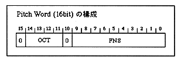

Direct sound output level (0-7)
Direct sound output level setting. 0 is the lowest volume (= Off), and 7 is the maximum volume.
Direct sound output PAN (0-31)
Direct sound output PAN setting.
For details, refer to “Chapter 7 Appendix 7-2 Details of SCSP PAN (32 levels)”.
PCM stream buffer start address (0000h-FFFFh)
Start address of PCM stream buffer. Specify the upper 16 bits of a 20-bit address.
PCM stream buffer size (0000h-FFFFh)
The size of the PCM stream buffer. Since it is the number of samples for 1ch, the same value is entered for both MONO and STEREO.
Pitch Word (0000h-7FFFh)
Specify the value of the SCSP pitch register (16 bits) as it is.

OCT: Specify the octave in 2's complement. -8 octaves to +7 octaves Up to can be specified. FNS: Specify between 1024 steps from the standard pitch (0) to one octave higher (1023) To do. Bits 15 and 10 are always 0.Effect input channel (0-15)□ For the pitch calculation method, see “Chapter 6 Supplementary explanation 6.4 PCM stream playback pitch” Please refer to the section “Calculation method”.
Effect input level 8 steps (0-7)
Specify the level of the direct sound sent to the effect input channel from 0 to 7. 0 is the lowest level (= Off), and 7 is the maximum level.